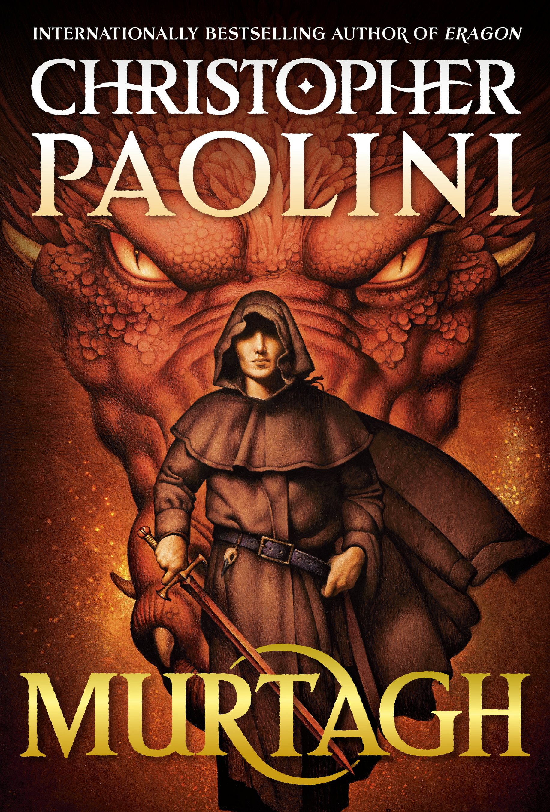

"Murtagh"
- Read on 2024-03-04
- Rating: ️️️️️
- Format: 🎧 (24 hours 32 minutes)
I admit I was thrilled to be back in the world of this series. It's one I've spent a fair amount of time in, and the familiarity of it was comforting and rewarding. If you haven't read the other books in the series, don't start here. Go back to the beginning, and enjoy the story from the beginning. It's great. As for this book - Murtagh is a nuanced character, and his continued stubbornness is both frustrating, and ingratiating. This book talks of his own dealings, after the events of the prior books in the series. Nothing is seen or shared of the vast majority of the rest of the characters. Despite the lack of overlap there, this book felt like a perfect continuation of the series, and I was glad to have more to read.
- Prior: Means of Ascent
- Next: Starter Villain